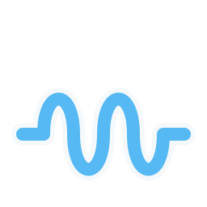

Inertance
Interface concepts
1
Workbench
2
Canvas studio
3
Guided lab
4
Analysis split
5
Focus layers
6
Compact hybrid
Repository
Responsive simulator design lab
Switch layouts and device sizes without losing your place.
▱ Laptop · 1440 × 900
▯ Phone · 390 × 844
▭ Phone landscape · 844 × 390